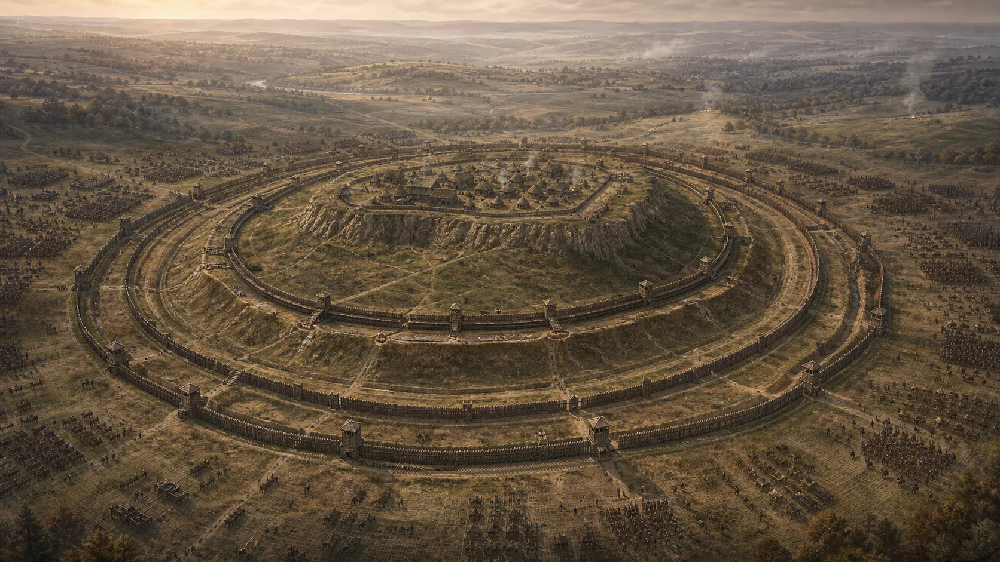
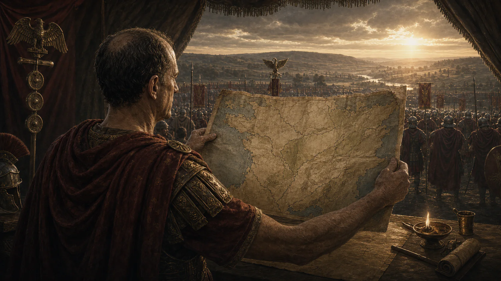
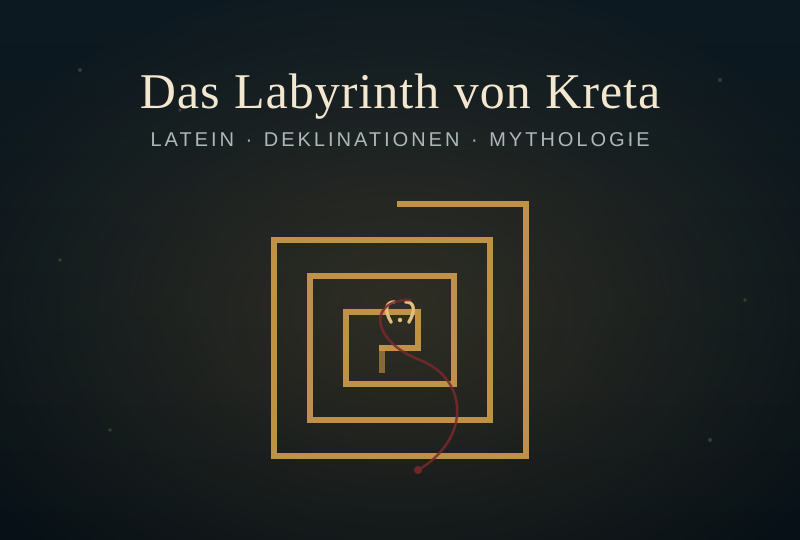
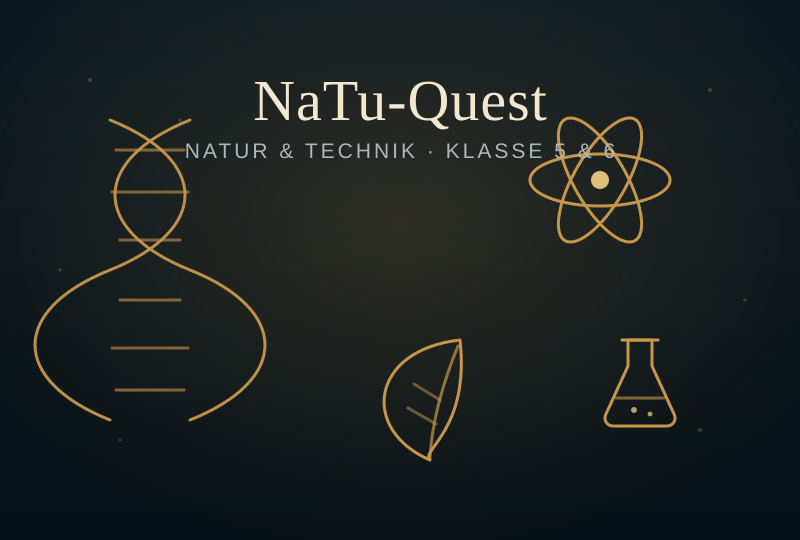

Direkt im Browser
Keine Installation, kein Konto. Ein Link genügt auf jedem modernen Gerät.
 Ludus Digitalis
Ludus Digitalis
Browsergames für den Unterricht: fachlich fundiert, erzählerisch und ohne Installation spielbar.
Ausgewähltes Spiel
Führe Caesars Legionen durch Gallien. Bilde lateinische Verbformen, entwickle dein Heer und meistere sieben Bücher bis zur Entscheidung bei Alesia.
Imperium Verborum spielen
Spiel öffnenFachliches Lernen als spielbare Erfahrung.

Ein historisches Lern- und Strategiespiel durch sieben Bücher des Gallischen Krieges – mit Forschung, Legionen, Schlachten und narrativen Bildsequenzen.

Ein storybasiertes Lern-Rollenspiel mit Bosskämpfen, Nebenquests und mehreren Enden.

Ein Latein-Abenteuer: Folge dem Faden der Ariadne durch das Labyrinth, bezwinge die Deklinationen und stelle dich dem Minotaurus.

Ein Quiz-Abenteuer durch fünf Themenwelten mit Combo-Ketten, Power-ups, Bosskämpfen und Klassen-Highscore – Vorbereitung auf den Jahrgangsstufentest.
Für dieses Fach gibt es noch kein Spiel – aber es kommen laufend neue dazu.
Neue Fächer, neue Welten, gleiche Mission: Wissen erleben.
Ein Hobbyprojekt rund um Spielfreude und das Lernen.
Ludus Digitalis ist ein privates Hobbyprojekt. Die Spiele entstehen aus Freude am Ausprobieren und sollen das Üben ein Stück lebendiger machen. Ich baue sie mit Sorgfalt, aber sie erheben nicht den Anspruch, in allen Belangen fehlerfrei oder vollständig zu sein – Inhalte und Mechaniken entwickeln sich weiter, und über Hinweise auf Fehler freue ich mich.
Keine Installation, kein Konto. Ein Link genügt auf jedem modernen Gerät.
Die Themen stammen aus dem Schulalltag und werden Stück für Stück verbessert.
Geschichten, Entscheidungen und Spielmechaniken geben dem Üben Bedeutung.
Mitmachen
Ein Fehler entdeckt, eine Idee für ein neues Spiel oder ein Thema, das du dir wünschst? Über kurze Rückmeldungen freue ich mich sehr. Das Formular dauert keine Minute – einen Namen brauchst du nicht anzugeben.
Die Rückmeldungen sammeln sich für mich gebündelt – kein Konto, keine öffentliche Kommentarspalte.